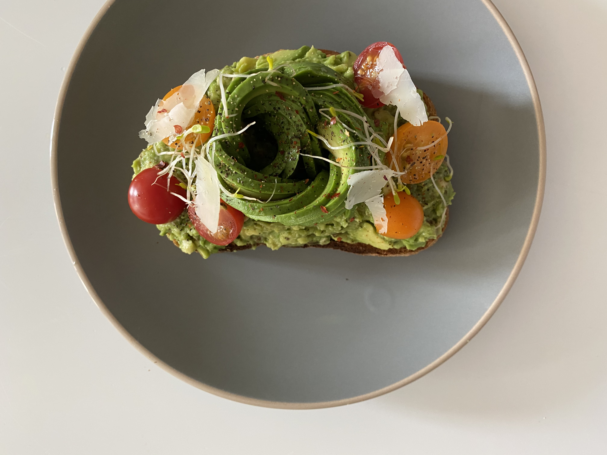

soft boiled egg with roasted
tomatoes over sourdough
Being kitchen has always been a favorite pastime of mine. I love every aspect of cooking & baking from trying new recipes, exploring new ideas, the communal bonding rooted in cooking, brining people together to the table - there is alot of great memories in the kitchen. Oddly enough, cooking has aligned well with the principles of UX. Every aspect from presenting food, in which we eat with our eyes first, understanding how important every ingredient no matter how small greatly impacts a dish, and creating food that happily brings people together to the table, within and across borders. Similarly, in UX, I strive to understand every individual parts of a product (visual, context, story, and feature), that when put together, serves a purpose that speaks in volume to the power of a great user experience that brings delight to all users.
kale roated sweet potato salad
scallops over cream corn base

"flower" avocado toast
broccoli pesto orecchiette
avocado toast with parm
roasted butternut squash soup
roasted purple potatoes with
poached egg
poached egg
rainbow cupcakes